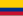

List of Latin American and Caribbean countries by GDP (nominal)
This is a list of Latin American and Caribbean countries by gross domestic product (nominal) in USD according to the International Monetary Fund's estimates in April 2024 World Economic Outlook database.
Cuba is not included in the list due to lack of economic data. Puerto Rico is not listed since it is a U.S. territory, and neither is the Falkland Islands since it is a British Overseas Territory.
| Rank | Country | GDP (nominal) (millions of US$) |
GDP (nominal) per capita (US$) |
|---|---|---|---|
| 1 | 2,331,391 | 11,352 | |
| 2 | 2,017,025 | 15,249 | |
| 3 | 604,260 | 12,812 | |
| 4 |  Colombia | 386,076 | 7,327 |
| 5 | 333,760 | 16,616 | |
| 6 | 282,458 | 8,291 | |
| 7 | 127,356 | 11,774 | |
| 8 | 121,592 | 6,567 | |
| 9 | 110,035 | 5,678 | |
| 10 | 102,328 | 3,867 | |
| 11 | 96,058 | 18,031 | |
| 12 | 87,347 | 19,369 | |
| 13 | 82,605 | 23,088 | |
| 14 | 49,334 | 4,014 | |
| 15 | 45,817 | 5,984 | |
| 16 | 37,355 | 3,505 | |
| 17 | 35,333 | 5,537 | |
| 18 | 28,365 | 19,861 | |
| 19 | 24,046 | 1,941 | |
| 20 | 21,178 | 26,592 | |
| 21 | 20,098 | 7,309 | |
| 22 | 18,829 | 2,791 | |
| 23 | 14,390 | 35,257 | |
| 24 | 6,863 | 23,596 | |
| 25 | 4,337 | 6,702 | |
| 26 | 3,296 | 7,170 | |
| 27 | 2,582 | 14,101 | |
| 28 | 2,127 | 20,533 | |
| 29 | 1,406 | 12,255 | |
| 30 | 1,134 | 23,705 | |
| 31 | 1,128 | 10,150 | |
| 32 | 708 | 9,455 |
See also
[edit]Wikimedia Commons has media related to Gross domestic product.
- Community of Latin American and Caribbean States
- List of Latin American and Caribbean countries by GDP (PPP)
- List of Latin American and Caribbean countries by GDP growth
References
[edit]
Economic classification of countries | |||||
|---|---|---|---|---|---|
| Three/Four-World Model | |||||
| Gross domestic product (GDP) |
| ||||
| Gross national income (GNI) | |||||
| Wages | |||||
| Wealth | |||||
| Other national accounts | |||||
| Human development | |||||
| Digital divide | |||||
| Net international investment position (NIIP) | |||||